Chapter 9 describes the load flow calculation, which is always performed first on the model of a network. The load flow calculation provides information about the distribution of currents in all cables and other connections of the network. Additionally, this calculation determines all the voltages at the nodes. The calculation is based on the power consumed by the loads and supplied by the production units. Furthermore, the switching states in the network and the settings of components, such as adjustable transformers, are also important.
The load flow calculation is aimed at testing the network design against operational criteria during normal operation and exceptional conditions, such as fault and maintenance situations. In this process, voltages, currents, and power distribution are calculated. Network losses can also be determined using the load flow calculation.
Devices connected to the electrical grid are specified to function properly if the currents and voltages remain within specific limits. A significant deviation from these limits can result in damage or accelerated aging of the device. This applies not only to the equipment of the connected users but also to the components of the network itself, which must be protected against high overvoltages and excessive currents caused by overload or short circuit. For the purpose of planning, analyzing, and operating an electrical grid at any voltage level, load flow calculations are made. These calculations are used, among other things, to gain insight into:
Because the network voltage and the current carrying capacity of components must remain within specific limits under all normal circumstances, it is necessary to analyze the most likely scenarios using load flow calculations. A distribution network is analyzed under high and low load conditions and with high and low decentralized generation. Fault situations must also be calculated. Voltage limits are established at the international level, and the limits for current carrying capacity are determined by the manufacturer or set conservatively by the network operator. Insights are obtained from the results of a load flow calculation, with currents and voltages being the most important. In summary, a load flow calculation provides the following results:
To perform the calculations, technical data of all components are required. The most important data are:
The method most commonly used to calculate the voltages and currents in an electrical network is the load flow according to Newton-Raphson. The method was first described in 1959 (Van Ness, 1959) and later in 1967 (Tinney, 1967) and has been successfully tested and accepted worldwide.
When analyzing distribution networks, it is generally assumed that the networks are symmetrically loaded and symmetrical. This means that the distribution networks are designed to be three-phase symmetrical and are also loaded symmetrically in three phases. This assumption is justified in the Dutch high-voltage (HS) and medium-voltage (MS) distribution networks. As a result, a single-phase representation of the network can be used in the load flow calculation, and it is not necessary to calculate all three phases. The network model used is that of the normal system.see chapter 7). In most Western European networks, this assumption also holds true, but in American distribution networks, for example, this cannot be done without further consideration, because those networks are operated differently and often exhibit asymmetry, both in design and in load.
When analyzing low-voltage distribution networks, one cannot always rely on the model of symmetrically loaded symmetrical networks. First, the network is not perfectly symmetrical because the cables used are equipped with three phase conductors and a neutral conductor. As a result, the impedances between the three phase conductors are not equal to each other. The same applies to the impedances between the phase conductors and the neutral conductor. Second, the loads in the low-voltage networks are not always perfectly three-phase symmetrical. For this reason, an extensive three-phase model is used for calculations on these networks.
The foundation for all network calculations is laid by Ohm's Law and Kirchhoff's Law. Since alternating currents are used in distribution networks, all calculations are performed in the complex plane. Voltage, current, impedance, and power are complex numbers that can be presented in modulus and argument or with their real and imaginary values. This is illustrated in Figure 9.1 using an elementary network with a connection to nodes on both sides and a reference at the bottom. The connection has an impedanceZ= R + jXand the currentIis the result of a load transfer from the left node with a magnitude ofS= P + jQ.

The voltages at the left and right nodes are respectivelyU1enU2with respect to the reference. The voltage differenceΔUacross the connection depends on the impedance and the current. The following relationships apply:
 |
[ |
9.1 |
] |
So for the voltage at the right node, the following applies:
 |
[ |
9.2 |
] |
The voltageU2at the right node can be depicted in a vector diagram, assuming that the voltage vectorU1a phase angle ofφ1makes degrees with respect to the real axis. The current vectorImakes an angleφwith the voltage vectorU1. In the vector diagram, it is clearly visible that the voltage differenceΔUis composed of two vectors, of which the vector–R·Iruns parallel to the current vector and the vector–jX·Iperpendicular to the current vector. In this example, the value ofRslightly larger than the value ofX.
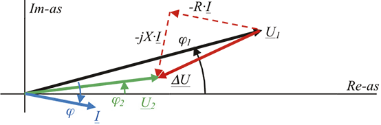Since it also holds that:
[ |
9.3 |
] |
formula 9.1 for the voltage difference becomes:
 |
[ |
9.4 |
] |
The voltageU2on the other side of the connection can now be easily calculated:
 |
[ |
9.5 |
] |
If it is again assumed that the voltage vectorU1a phase angle ofφ1degrees with respect to the real axis, the voltage vectors can be depicted in the vector diagram below. In figure 9.3, it is clearly visible that the voltage differenceΔUis composed of two vectors, of which the vector–(RP+XQ)/U1*runs parallel to the voltage vectorU1and the vector–j(XP-RQ)/U1*perpendicular to the voltage vectorU1state. In the diagram, the voltageU2a phase angle ofφ2degrees.
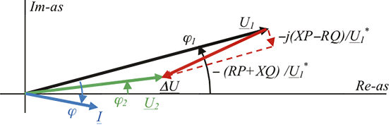It is therefore possible to determine the value of the voltage differenceΔU in terms of impedance and the transmitted power. In figure 9.3, it is noticeable that the absolute value of the voltage difference is largely determined by the vector–(RP+XQ)/U1 *which runs parallel to the voltage vectorU1. Therefore, the voltage difference can be approximated as:
 |
[ |
9.6 |
] |
MetU1= |U1|. This approximation only holds for small values ofΔU, up to approximately 10% ofU1. In the same figure 9.3, it is noticeable that the angular displacement of the voltage vectorsU1enU2relative to each other is largely determined by the vector–j(XP-RQ)/U1*, which is perpendicular to the voltage vectorU1.
The absolute value and the angle of the voltage difference across a connection are therefore dependent on the impedance of the connection and the power to be transmitted. The ratio ofRenXof the connection plays a major role. In an overhead high-voltage network, for example, the reactance is much greater than the resistance, causing the magnitude of the voltage difference to be primarily determined by the transmission of reactive power (the productXQin equation 9.6). In cabled low-voltage networks, however, the resistance is much greater than the reactance, causing the magnitude of the voltage difference in that case to be primarily determined by the transmission of active power (the productRPin equation 9.6). In medium voltage networks, resistance and reactance are of the same order of magnitude, causing the voltage to be determined by both active power and reactive power. Table 9.1 provides an overview.
Voltage level |
Type |
R/X |
Main cause of voltage difference |
Main cause of phase shift |
HS |
Lijn |
1 |
Q |
P |
MS |
Kabel |
1 ... 5 |
P and Q |
P and Q |
LS |
Cable up to 150 mm2 |
>> 1 |
P |
Q |
The table shows that only in high-voltage and low-voltage networks can a simple statement be made about the relationship between the voltage difference and the transmitted power. In the case where the R/X ratio is on the order of 1, as with all medium-voltage networks, the voltage difference is always caused by a combination of active power and reactive power. The influence of the R/X ratio on voltage regulation is already noticeable in the difference between using a circuit with three single-core cables or a three-core cable. The difference is that the reactance of three single-core cables is greater than that of a three-core cable. Figure 9.4 shows the voltage drop with a load of 5 Mvar behind a 10 km long three-core medium-voltage cable.R=1.26 Ω, X=0.89 ΩFigure 9.5 shows the voltage drop with the same load of 5 Mvar behind a 10 km long circuit with single-core medium-voltage cables.R=1.26 Ω, X=1.6 ΩIt is clearly visible that the reactive power transport causes a greater voltage drop in a circuit with single-core cables.R/X=0.8) than in a circuit with a three-core cable (R/X=1.4).

For a load flow calculation, three types of nodes are important. These types are distinguished by whether only a load is connected, a voltage-regulated synchronous machine, or a network supply. Table 9.2 provides an overview.
Node with: |
Type |
Known parameters |
Unknown variables |
Belasting |
PQ |
P and Q |
|U| and arg(U) |
Voltage-regulated generator |
PU |
|U| and P |
Q and arg(U) |
Grid supply (swing bus) |
UT |
|U| and arg(U) |
P and Q |
Depending on what is connected at the nodes, there are known parameters and unknown variables. For a load, the specified values are the amount of active power and reactive power it wants to draw. The value of the voltage and the angle of the voltage vector at the node are calculated by the load flow. For a voltage-regulated generator, the specified values are the voltage at the node and the active power produced by the generator. The load flow calculates the reactive power produced by the generator and the angle of the voltage vector at the node. For a grid supply, the absolute value of the voltage is a fixed parameter, and the angle of the voltage relative to a reference is usually kept at zero degrees. The load flow calculates the active and reactive power delivered or absorbed by the grid supply. This is the result of all the power drawn and produced, including losses. The following paragraphs will delve deeper into these three types.
As described in Chapter 8, the power consumed by the load depends on the voltage. In most load flow programs, three load models can be chosen for active power.Pand for the reactive powerQ, namely:
For a load that behaves as a constant power consumption, the load current will increase with decreasing voltage, as the product of voltage and current must remain constant. For a load that behaves as a constant current consumption, the power consumed will decrease proportionally with the voltage. For a load that behaves as a constant impedance, the current will decrease linearly with decreasing voltage according to Ohm's law. Consequently, the power consumed will decrease quadratically. Table 9.3 summarizes the voltage-dependent behavior for these three types.
In formula form, the load can be described as a function of the normalized voltage with exponentpfor the active power andqfor the reactive power:
[ |
9.7 |
] |
with:
| Pnom | active power at nominal voltage |
| Qnom | reactive power at nominal voltage |
| |U| | current voltage |
| Unom | nominal voltage |
Belastingsmodel |
Voltage dependency of power |
p, q |
Constant power |
constant |
0 |
Constant current |
lineair |
1 |
Constant impedance |
kwadratisch |
2 |
Figure 9.6 illustrates the relationship between voltage and power for the three models in Table 9.3. The horizontal line represents the constant power model, independent of the voltage. For the constant current model, the power increases linearly with the voltage, and for the constant impedance model, it increases quadratically. Both of the latter models start at the origin. All load models pass through the common point, characterized by the nominal power that is drawn at the nominal voltage.
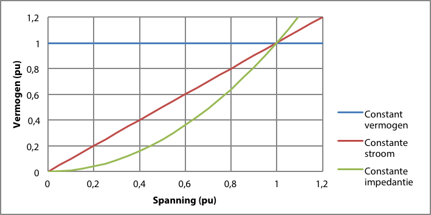Often, the constant current model is not directly supported. In such cases, it is common to approximate the constant current model with a combination of 50% constant power and 50% constant impedance. For voltages between 0.8 and 1.2 pu, the deviation of the approximation from the constant current model is at most 2.5%. Figure 9.7 illustrates this.

In practical cases, it is common to model the load with a portion of constant power and a portion of constant impedance. By dividing the active and reactive load at nominal voltage into a portion of constant power and a portion of constant impedance, most cases can be accurately calculated. This model is described in Chapter 8. The complex power is then calculated as follows:
 |
[ |
9.8 |
] |
The impedance for the constant impedance portion is calculated from the nominal voltage:
 |
[ |
9.9 |
] |
Chapter 8provides the voltage-dependent behavior for several types of loads. The reactive part of the load in medium voltage (MV) and low voltage (LV) networks often behaves as a constant impedance. The active part can be composed of a portion of constant power and a portion of constant impedance. Table 9.4 provides an overview of the voltage dependency of several well-known types.
Type of load |
Share of constant power (%) |
Share of constant impedance (%) |
Industrieel |
90 |
10 |
Asynchronous machine |
100 |
0 |
Switched-mode power supply |
100 |
0 |
Zakelijk |
35 |
65 |
Woningen |
30 |
70 |
Gloeilampen |
0 |
100 |
Electric heating |
0 |
100 |
Airconditioner |
75 |
25 |
Verlichting |
25 |
75 |
The influence of the transmitted power on the voltage in the network and on the losses is best explained using a load with constant power behavior. The network in figure 9.8 is powered by an infinitely strong power source at a connected voltage of 10.5 kV.
The connection is a 10 km long cable of type 3 x 150 Cu XLPE 6/10. The impedance over the entire length is:R = 1.26 ΩenX = 0.93 Ω.
The load of 4.67 MW and 1.76 Mvar causes a power transfer of 5.0 MW and 2.0 Mvar from the supply. This corresponds to a power factor of 0.93. The power per phase at the supply is: 1.67 MW and 0.67 Mvar.
The phase voltage at the supply node is:
[ |
9.10 |
] |
The voltage difference is, according to equation 9.6:
[ |
9.11 |
] |
The voltage on the load side is:
 |
[ |
9.12 |
] |
The current follows from equation 9.1:
[ |
9.13 |
] |
The power consumed by the load per phase is then according to equation 9.3 equal to:
[ |
9.14 |
] |
This corresponds to a three-phase power consumed by the load of 4.67 MW and 1.76 Mvar. The power on the load side is smaller than the power on the supply side because the voltage at the load node is lower than at the supply node while the current is the same. The difference between the power on the supply side and the power on the load side is equal to the loss in the connection:Sverlies= 0.34 + 0.12 Mvar.
The real part can also be calculated as follows:
 |
[ |
9.15 |
] |
By varying the load step by step, an overview of the influence of load variation on the voltage is obtained. Figure 9.9 shows the voltage at the load node where the active powerPof the load is varied between –5 and 5 MW and the reactive powerQis varied from –5 to 5 Mvar. The voltage for each combination ofPenQis depicted on a plane in the three-dimensional graph. Figure 9.9 shows that the influence of variation in active power and reactive power on the voltage in the example network is approximately equal. This corresponds to what is stated in Table 9.1 for an MV network.
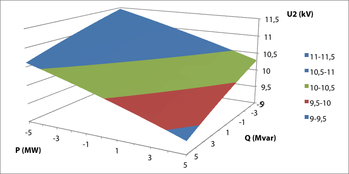In the simple example network of figure 9.8 with a power supply, an impedance, and a load node, there is a load with powerP+jQconnected. This load has a power factorcos(φ)The relationship between the transmitted power and the voltage on the load side exhibits a characteristic curve, which is called the U-P curve of a connection. This curve is calculated as follows (Cigré, 1986), (Johansson, 1995):
 |
[ |
9.16 |
] |
The curves are shown in figure 9.10 for various values ofcos(φ). The curves show that there is a maximum for the powerP+jQthat over a connection with impedanceR+jXcan be transported. Additionally, the same figure shows that theoretically, power can be transported at two voltages. The upper half of each U-P curve indicates that as the transported power increases, the voltage at the load decreases. This is a normal situation. The lower half of each curve, shown in the shaded area, indicates that with decreasing load, the voltage at the load point decreases. This is not a stable situation and thus will not occur in reality. If the demanded power exceeds the maximum power, the voltage will collapse to zero. This is also known as voltage collapse. In such a case, a load flow calculation program will generate a message indicating that the load flow cannot be solved.

It is therefore not possible with a givencos(φ)greater power to be transported than the rightmost point in the U-P curve indicates. The image below shows the result of the load flow calculation of the example network for the maximum power of one of the curves: a load of 17 MW at acos(φ)of 0.95. Incidentally, this load is much greater than the specified maximum load capacity of the cable.
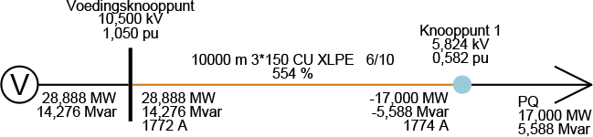When applying the constant power model, it can happen that due to voltage collapse, as described in paragraph 9.2.2, the load flow cannot be calculated because the load current increases as the voltage decreases. In that case, the solution of the load flow calculation overshoots the rightmost point of figure 9.10. However, when applying the constant current model or the constant impedance model, the load flow can usually be calculated in those cases. If the load flow cannot be solved, it is recommended to investigate the problem by choosing the constant impedance model. In most cases, it will become apparent that the specified power is too large for the connections used.
A pitfall arises when using a load with the behavior of 100% constant power behind a voltage-regulated transformer. If the size of the load is of the same order of magnitude as the nominal power of the transformer, an undesirable interaction between the load and the transformer regulation can occur. In that case, it is better to model the load with a constant current or constant impedance.
In general, a generator causes a voltage change in the electrical vicinity of the coupling point. The percentage voltage change at the coupling point can be estimated using an approximation formula (EnergieNed, 1996):
[ |
9.17 |
] |
with:
| SG | nominal generator capacity (MVA) |
| Sk | short-circuit power (MVA) |
| alpha | phase angle of short-circuit impedance (rad) |
| phi | phase angle of generator current (rad) |
Using this approximation formula, it is recommended to maintain a maximum allowable voltage increase of 2% for decentralized generation in medium voltage (MV) networks and 3% in low voltage (LV) networks (EnergieNed, 1996). Figure 9.12 shows an MV feeder, where a decentralized generator is connected at 'Substation 4'. If the generator switch is open, the load flow calculation results in a voltage of 10.389 kV for the substation. If the short-circuit power and the phase angle of the short-circuit impedance are given, the percentage voltage change can be approximated using the generator data. It is given that the short-circuit power is 96 MVA and the phase angle is 0.82 rad (calculated fromRi= 0.783 ΩenXi= 0.840 Ω). The terms used regarding short-circuit power and short-circuit impedance are further explained in Chapter 10. For a fully loaded generator with a nominal power of 0.3 MVA and a nominal cos(φ) of 0.85, formula 9.17 calculates a voltage change of 0.3%. A larger generator with a nominal power of 3.0 MVA and a nominal cos(φ) of 0.85 results in a voltage change of 3.0%.

The load flow calculation must confirm this. The voltage increased to 10.419 kV with the application of the 0.3 MVA generator, which corresponds to a 0.3% voltage increase. With the application of a 3.0 MVA generator, the voltage indeed increases by approximately 3% to 10.684 kV.
The generators are modeled according to chapter 8 with a cos(φ) control or with a voltage control. In the first case, the ratio between active powerPand reactive powerQfixed. The generator with a cos(φ) control can therefore be modeled in the load flow calculation as a negative load with the constant power model.
If the generator has a voltage regulation, the reactive power generated in the load flow calculation depends on the actual voltage relative to the desired voltage at the regulated node: the voltage increases if the generator produces more reactive power. According to Table 9.1, the influence is greatest in networks with a small R/X ratio, such as in high-voltage networks and to a lesser extent in medium-voltage networks. The reactive power that the generator can produce or absorb is limited betweenQminenQmax. Between these minimum and maximum values of reactive power, the generator can influence the voltage by adjusting the production of reactive power. Conversely, the deviation of the actual voltage from the set voltage determines the produced reactive power. If the actual voltage is equal to the set voltageUrefzero var reactive power is generated.
Figure 9.13 shows the relationship between the actual voltage at the controlled node and the generated reactive power. The set voltage isUref. If the actual voltage is equal toUref, the generated reactive power is zero. If the actual voltage drops, the generator will generate more reactive power according to the sloped line. If the production of reactive power reaches the upper limitQmaxreached, the voltage is lower than or equal toUminIf the voltage increases, the generator will produce less reactive power or even absorb it. If the production of reactive power reaches the lower limitQmincomes, the voltage is higher than or equal toUmax.
In the event of a change in the set voltageUrefthe graph will shift entirely up or down. If the value ofUrefis set higher, the generator will produce more reactive power and the actual voltage will increase.

The slope of the line betweenUminenUmaxis the voltage-reactive power characteristic, which represents the value of the voltage variation as a result of a variation in reactive power.
 |
[ |
9.18 |
] |
The calculation of the load flow is based on Kirchhoff's and Ohm's laws and on balancing the complex power:
[ |
9.19 |
] |
Herein isSthe complex power, consisting of active power and reactive power. The power generated by generators is absorbed by the loads. The grid losses are a result of the electricity transport. Since these powers are not automatically balanced, grid supply is needed to make the power balance correct. Distribution networks are, under normal operating conditions, connected to an external grid from which they are supplied. This external grid consists of a network of transmission connections, generators, and loads, usually at a higher voltage level. The grid supply represents this with a constant voltage source and a grid impedance, as described in Chapter 8.
The active power and reactive power that the grid supply delivers or absorbs is the result of the load flow calculation. Additionally, the voltage of the grid supply is given and constant, both in magnitude and angle. In load flow analysis, a node to which the grid supply is connected is also referred to as a swing bus.
For the proper functioning of equipment, the voltage must remain within certain limits. Therefore, international agreements have been made regarding the level of nominal grid voltage and the permissible deviations from it. These are laid down in the international standard IEC 50160. The standard prescribes the requirements concerning voltage in public low-voltage (LV) and medium-voltage (MV) networks. The nominal voltage for low-voltage networks is 230 V. Most Western European countries had a nominal voltage of 220 V before 1995. The United Kingdom had a nominal voltage of 240 V. The nominal value of 230 V resulted from a compromise to establish a European standard. The nominal voltage for medium-voltage networks can vary by region, so the standard refers to a declared voltage, categorized between 1 and 35 kV. The requirements for slow voltage variations during normal operation have been adopted by the Energy Chamber (Netcode, 2009).
The possibility of temporarily allowing a voltage drop of 15% is intended for cases of maintenance or repair, where the network needs to be switched differently. For normal operating situations, the network must be designed in such a way that the voltage remains as much as possible within the margins over a long period. The settings of the distribution transformers and the reactive power distribution are important in this regard. A good power factor (cos(φ)) can contribute to this. Slow load variations, such as over a day, can be managed using the voltage regulations on the supply transformers.
In an electrical grid, the transport of electrical power is always accompanied by voltage variations at the nodes. The voltage variations in the distribution network are caused by events in the high-voltage (HV) network and by power transport over the cable connections and transformers. Voltage variations are automatically compensated in the substations using voltage regulation on the HV/medium-voltage (MV) transformer. The supply transformer is equipped with an adjustable tap changer on the primary side for this purpose. The tap changer is controlled by a system that measures the voltage on the MV side and tries to keep it within limits. Because the system controls a discrete tap changer, it is not possible to set the voltage on the secondary side to an exact desired value. It may happen that sometimes two or more tap positions are possible, depending on the tap size relative to the voltage band to be regulated. Common tap positions for the supply transformer are: 21 steps of 1.5%.
In the low voltage networks, there is no automatic voltage regulation, and the tap position on the MV/LV distribution transformer can be manually set so that all voltage variations remain within the specified limits. The distribution transformer can be adjusted with 5 steps at: –7.5%, –5%, –2.5%, 0%, and +2.5%.
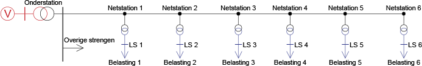Figure 9.14 provides an example of a typical MV string with substations. A substation typically has 20 fields connected with MV strings. The load of the remaining MV strings is concentrated in an MV load on the MV busbar of the substation.

A simulation was conducted on this network with a varying voltage on the HV side of the supply transformer and daily varying loads. The variations are recorded in profiles as a function of time, for which a load flow calculation is made for each value. Figure 9.15 shows the node voltages from the HV busbar to all LV busbars as a result of the load flow calculation for the profiles. The voltage is displayed in pu. Clearly visible is the variation of the voltage on the HV busbar of the substation, which was set to plus and minus 5%. Due to the control action of the supply transformer, the variation on the MV busbar of the substation is limited to about 2%. The voltage variation does not significantly increase in the direction of 'Substation 6'. The voltage level slightly decreases in that direction. It is also clearly visible that the voltage variation on the LV busbars, at about 3%, is slightly larger than on the MV busbars of the substations. This is caused by the impedance of the distribution transformers.
If the MV network is extensive behind the supply transformer, current compensation (compounding) is sometimes applied. In this case, in addition to the voltage on the MV side, the load current also influences the regulation of the tap changer. With an increasing load current, the regulated voltage on the secondary side will increase further, ensuring that the value of the MV and LV voltage in the network remains within the permissible limits. Figure 9.16 illustrates this.
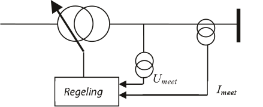A correction is subtracted from the voltage used for regulation, which depends on the load current and a chosen compensation impedance.
 |
[ |
9.20 |
] |
Figure 9.17 shows the secondary voltage of the power transformer as a function of the power transported by the transformer. Without regulation, the voltage decreases due to the transformer impedance with increasing power. With a standard voltage regulation, when a voltage threshold is undershot, the tap changer is adjusted, resulting in a stepped curve that lies between the lower and upper limits. With voltage regulation that includes current compensation, the compensated control voltage will undershoot a voltage threshold earlier, causing the tap changer to adjust sooner. As a result, the stepped curve rises with increasing power.

The compensation factor is specified in Ohms and ensures that the regulation 'sees' a slightly reduced voltage as a result of increased current in the line. The compensation ensures that the voltage in a long line generally meets the user's requirements. With a large current, the regulation will ensure that the voltage is increased, thereby improving the voltage in the medium voltage (MV) line at an average distance from the supply transformer. Figure 9.18 illustrates this with the voltage profile for all nodes, distributed over a long line, from the supply transformer to the end. The voltage profile shows a declining line due to power transport from the supply transformer. Without compensation, the voltage is only within the specified minimum and maximum values near the supply station. The voltage at the end of the line can become lower than the minimum voltage. With compensation, the voltage profile in the line is generally improved because it now regulates at a fictitious point near the middle of the line. As a result, the voltages of all nodes in the line are within the limits.
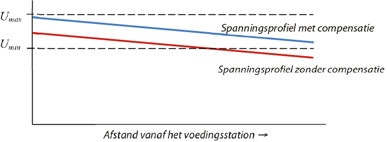By applying current compensation, the voltage variation due to the varying load at the end of the line is smaller than with voltage regulation without current compensation. As a result, a heavy load is less likely to cause the voltage limit to be exceeded. Additionally, the use of current compensation allows for longer cables to be permitted.
If decentralized generators are located close to the regulated transformer, current compensation must be applied with caution. The generated power reduces the load current through the supply transformer, which can cause the voltage at the end of the line to exceed the voltage limits. This can be prevented by connecting the decentralized generation to a separate field, whose current is not used for current compensation. If this is not possible, the current from the decentralized generators must be subtracted from the load current to be compensated in the regulation. This option is offered by various manufacturers (Hiscock, 2007).
In extensive medium-voltage networks, regulating transformers are sometimes used, which are installed in regulation stations. This allows for local and independent voltage regulation in a downstream section of the network, separate from the voltage regulation at the supply station. Regulating transformers can be autotransformers or booster transformers. Similar to supply transformers, the voltage is regulated by changing the transformation ratio using a tap changer. The control of the tap changer is managed by an automatic voltage regulator that measures the voltage on the secondary side. The advantage is that the voltage in an area with a varying load pattern can be independently regulated. Disadvantages include the high costs and the reduced short-circuit capacity.
In the network, in addition to adjustable transformers, there are also synchronous generators with voltage regulation. The control action of these components affects the voltages in the network and thereby the currents and load currents. In practice, the control action of the generators is faster than the control action of the tap changers of the transformers in the substations.
The angle that the current vector makes with respect to the voltage vector is referred to asφ. Instead of the angle, the power factor is usually usedcos(φ), also referred to as the power factor. With a small angle, the current is almost in phase with the voltage. In that case, thecos(φ)approximately equal to 1. At this value, almost all the current is used for performing work with active power. At a value ofcos(φ)that is less than 1, not all the current is used for performing work. For the same amount of active power, a larger current is needed than with a power factor of 1. Formula 9.21 describes the relationship between the transported active power and the current with thecos(φ)in a three-phase system.
 |
[ |
9.21 |
] |
In a network with predominantly inductive load, the current lags behind the voltage and reactive power is absorbed. This reactive power is transported through the network and causes an increase in the current. An increase in the current leads to a quadratic increase in the losses in the network. An improvement in thecos(φ)leads to a reduction of these additional network losses. Moreover, the elimination of a certain amount of reactive power to be transported makes more transport capacity of transformers and connections available for transporting active power. It is common tocos(φ)to improve with the help of capacitors. In high-voltage networks, adjustable capacitor banks ranging from 50 to 150 Mvar are used. At the medium-voltage level, compensation is often done decentrally within the networks, and at the low-voltage level, it is done at the component level, particularly with motors. The loss in the three phases of a cable connection is:
[ |
9.22 |
] |
If thecos(φ)is improved tocos(φ)v), the ratio of the loss after and before the improvement is:
 |
[ |
9.23 |
] |
With an improvement of thecos(φ)from 0.8 to 0.95, the ratio is 0.71. This means a reduction in loss of 29%. Because a smaller current is needed to transport the same active power, after thecos(φ)-improvement, more active power can be transported. The ratio of the currents after and before the improvement is:
 |
[ |
9.24 |
] |
During the improvement of thecos(φ)from 0.8 to 0.95, the ratio is 0.84. This means a reduction in the required current by 16%. As a result, the capacity of the cable connection appears to have increased.
If thecos(φ)-improvement is carried out with a capacitor bank, the required reactive powerQC) can be calculated from the difference of the reactive power before the improvement (Q) and after (Qv).
[ |
9.25 |
] |
From this, the required reactive power can be determined:
 |
[ |
9.26 |
] |
This reactive power is generated at nominal voltage by a capacitor bank, whose capacity inFper phase with respect to the neutral point is equal to:
 |
[ |
9.27 |
] |
The transmission of electricity always involves losses, particularly in cables and transformers. For an electricity supply system, the network loss is equal to the difference between the generated and imported power and the power consumed by the loads:
 |
[ |
9.28 |
] |
The active part of the loss is equal to the heat development in the involved components. The reactive power loss is not. In the example network of figure 9.19, the loss for the entire network is equal to:
Pverlies= P lossimport– Pbelasting= 5.00 – 4.67 = 0.33 MW
Qverlies= Qimport– Q loss = Q importbelasting= 2.00 – 1.88 = 0.12 Mvar
For each connection in an electrical grid, the loss can be calculated from the sum of the power flowing into the connection from both sides. Figure 9.20 illustrates this.
On the supply side, the power values are positive. On the load side, the power values flowing into the connection are negative.
 |
[ |
9.29 |
] |
The loss can also be directly calculated from the current and the impedance. It is important to take into account that the cable has a capacitance.Chas and therefore also generates reactive power itself, which must be subtracted from the loss. It is customary to split the capacitance of the connection into two equal parts and concentrate these at the sending and receiving ends of the connection. Figure 9.21 shows the usual Pi-model of a connection. Here, nodes 1 and 2 are respectively the nodes at the sending and receiving ends of the connection. The transverse impedance is usually only used for modeling a lossless capacitance. The total transverse impedance of the connection is evenly distributed over both ends of the connection.Zd1enZd2.
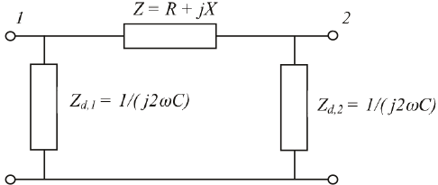The complex powers are calculated as follows. For the reactive power generated by the capacitance, the following applies:
[ |
9.30 |
] |
The total power loss in the connection, corrected for the reactive power generated in the connection, is then:
[ |
9.31 |
] |
For the calculation example, the total capacitance for 10 km of cable of type 3x150 Cu XLPE 6/10 is equal to:C = 3.8 μFThe impedance of this capacitance is applied 50% at the supply node and 50% at the load node, so that in the calculation model the capacitive reactive power is generated distributed across both nodes. For the losses in the three phases, the following applies:
 |
[ |
9.32 |
] |
Due to the loss, the involved network components become warm. An excessive rise in temperature leads to accelerated aging of the components. The temperature of a loaded cable depends on the current strength and environmental factors, including the ability to dissipate heat. For cables, this is specified in the international standard IEC 60287. Temperature fluctuations can also lead to accelerated aging. One of the causes of daily temperature fluctuations is the daily cyclically varying load current. Due to temperature fluctuations, materials expand and contract. In cables, this leads to weak points in the insulation, which can result in a spontaneous short circuit.see paragraph 4.1The permissible thermal load of cables under cyclically varying load is specified in the international standard IEC 60853.
The loss of a transformer is divided into short-circuit loss (or copper loss) and no-load loss (or iron loss or magnetization loss). The short-circuit loss depends on the transported current and is comparable to the active power loss in a connection. The no-load loss arises from eddy current losses that occur in the iron core of the transformer during the magnetization of the core. The no-load loss is not dependent on the transported current but on the voltage.
As described inchapter 8, the short-circuit loss is equal to:
 |
[ |
9.33 |
] |
Herein, the resistance, referred to the secondary side, is calculated from the nominal short-circuit loss.Pk(in kW), the nominal voltage (in kV), and the nominal power (in MVA):
[ |
9.34 |
] |
The modeling of the no-load loss of the transformer is described in chapter 8. The value is given for the nominal voltage. From this, the main field resistance is calculated.
 |
[ |
9.35 |
] |
The loss is then calculated as follows:
[ |
9.36 |
] |
If saturation is taken into account, the exponent in equation 9.36 can become larger. A value of 2.6 is sometimes mentioned (EnergieNed, 1996).
The loss percentage at the national level is approximately 4 to 5% of the total electricity production. This includes the losses in all HV, MV, and LV networks, including the associated transformers. The losses can be attributed to the various levels of the electricity supply system. For the electricity networks, the following general key figures apply (EnergieNed, 1996):
As consumption occurs at a lower voltage level, multiple higher voltage levels are utilized. Thus, the total loss percentage for electricity consumed at the LV level is on average about 7 to 8%. The costs of the network losses are allocated to the various consumer categories at the different voltage levels through the calculation of fuel costs.
The stochastic behavior of the load was discussed in Chapter 3, where the concept of 'simultaneity' of the load was introduced. However, a load flow calculation cannot adequately handle the simultaneity of the load in principle. Loads are usually specified for their maximum values. In reality, the load varies between a minimum and a maximum value. Therefore, the exact size of the load is usually not known but can be described with a probability function (see Chapter 3). This is called stochastic behavior. As the size of the network decreases, the stochastic behavior becomes more important for the network designer. This is taken into account when planning MV and LV distribution networks. If the network designer does not do this, the network will be overdesigned. This paragraph discusses three techniques that provide more insight into this:
There are various ways to model the non-coincidence of loads. The simplest method is to incorporate the coincidence factor into all loads. To do this, the loads are multiplied by the coincidence factors, making them smaller. If this is done for all loads at the substations, the sum of the load at the substation level will match the actual value, but the load flows in the medium-voltage (MV) lines will be smaller than the actual values. The reason lies in the non-coincidence of the loads, which causes the occurring local maximum flows to be 'averaged out' at a higher level.
A better approach uses negative current injections, which can account for the non-coincidence of the load in radially operated networks. This ensures that in a lower network segment, the maximum loads can be considered, while at a higher level, the simultaneity of the loads from the lower network segment is managed by connecting a negative load.

Figure 9.22 illustrates how a simultaneity factor of 0.82 can be managed by injecting a negative load current of 19 A into the MV busbar of the substation on a total load of 113 A (56 plus 57 A in the two branches). As a result, the load current through the supply transformer is 93 A, while the load currents in the branches are not reduced. The advantage of this method is that the supply transformer is not oversized and the cables in the branches are not designed too tightly. In the example, the simultaneity of the loads across various branches is managed by the negative load on the supply transformer. However, it is also possible to manage the simultaneity of the loads at other points in the MV distribution network. This can be done, for example, in a very long branch with a negative load applied halfway along the branch or at a branching point. The latter can be done in radially operated networks.
A stochastic load flow calculates the extremes of currents and voltages in a distribution network where the loads behave stochastically. It is assumed that the loads can be modeled with normally distributed probability functions. This is an approximation of reality, which in practice can be used with sufficient accuracy. Loads that do not behave as a normally distributed probability function, such as very large switching loads and decentralized generation installations, cannot be calculated with the stochastic load flow. This method is particularly suitable for calculating the load flow in low-voltage distribution networks (Phase, 2008).
All normally distributed stochastic loads can be described according to chapter 3 with their average value and a spread. The stochastic load flow first calculates the load flow for the average values of all stochastic loads. The result consists of the average values for the voltagesUgemiddeld) and currents (Igemiddeld) in the grid. Then, the currents and voltages in the grid are calculated for the situation where the grid supply is disconnected, and a current is injected at the location of all stochastic loads equal to the variance (the square of the standard deviation) of the respective stochastic probability distribution. This calculation determines the spreads of all voltagesUspreiding) and currents (Ispreiding) calculated in the grid. This allows for the calculation of the upper and lower limits of the currents and voltages in the network, where it is sufficient to consider adding and subtracting one times the spread:
Figure 9.23 shows an LV distribution network, consisting of two branches each with 4 LV cables, where each cable is connected to 10 detached houses. According to the Velander method, the load current of 10 detached houses is 24 Aalpha=0.00023, beta=0.023, V=4400 kWhAccording to the same method, the load current of 40 detached houses is 81 A (at the beginning of each branch) and of 80 detached houses is 153 A (on the secondary side of the network transformer).
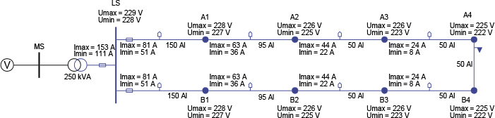In figure 9.23, the minimum and maximum voltage values for the nodes are shown, based on the average value plus and minus one times the spread. Additionally, the minimum and maximum current values are displayed, also based on the average value plus and minus one times the spread. It is notable that the calculated maximum current values on the secondary side of the network transformer and at the beginning of each branch correspond to the values calculated according to the Velander method.
The advantage of the stochastic load flow over the method of injecting negative loads is that it can also be applied to meshed networks. For example, if the switch in the last connection between nodes A4 and B4 is closed, the average values will not change because both branches were equal. Therefore, the average current value through the connection between A4 and B4 is zero. However, the spread of the current over that connection is not zero: the stochastic load flow calculates a value of 5 A. As a result, the spread of the other current and voltage values in the network also decreases.
To make good use of the capacity of cables and transformers in medium-voltage distribution networks, the planner must have insight into the actual network load and voltage management. For this, detailed measurement data is needed, which, unlike in transmission networks, is not abundantly available in distribution networks. When designing these networks, maximum loads are often assumed, taking into account the growth of individual users. As a result, there is often more transport capacity in the medium-voltage networks than needed. However, because measurements in these networks are limited, there is insufficient insight to utilize that capacity. In recent years, more measurement data has become available that characterizes the behavior of users and user groups. The pseudo state estimation makes use of this. By determining the non-coincidence of loads per time unit, a much better understanding of the network load and voltage management is achieved without having to measure at every point in the network.
The goal of pseudo state estimation is to monitor medium voltage networks based on a limited amount of measurements and load profiles. Monitoring involves calculating the voltage and current management in a network over a period. This process utilizes the specific behavior of groups of customers. In recent years, a lot of data has been collected in the Netherlands about the behavior of various customer groups. By combining measurements in substations with insights into the behavior of different customer groups (profiles and composition) in pseudo state estimation, an understanding of the load distribution in the network is achieved, allowing for the calculation of currents and voltages.
A traditional state estimator typically operates with more than the strictly necessary number of measurements to describe the state of a network. In contrast, pseudo state estimation works with fewer than the necessary number of measurements, combined with knowledge of the network and load behavior. The method is tailored for use in a medium-voltage distribution network. Here, measurements in a substation are combined with load patterns from network stations. The maximum current measurements from network stations serve as the base distribution. The load patterns can be constructed from the composition of customer groups per station and the load patterns of individual customer groups, such as households, shops, and offices. Additional measurements, such as those from decentralized generators, can also be incorporated into the method. The pseudo state estimation is based on:
Figure 9.24 illustrates the principle of pseudo state estimation. The load current of a supply transformer is measured. The maximum load currents of all substations are known, and the load profiles are estimated.

If the composition with standard load categories is known, the resulting load profile for each substation is equal to the weighted average of all standard load profiles.
The transformer loadbtransf,ifor timeimust be equal to the sum of the loadsbj,ifor all substations in the line. For the estimation, the losses are initially disregarded.
[ |
9.37 |
] |
The simultaneity factorsgifor each time pointican be easily determined from the measured transformer profile and the load profiles for the substations.
[ |
9.38 |
] |
By determining for each time pointito correct the loads per substation with the simultaneity factorgithe load flow for that time point can be calculated, and thus the state is estimated.
This paragraph explains three specific applications of the load flow calculation. First, it addresses the network openings in radially operated distribution networks. By choosing the location of the network openings carefully, network losses can be minimized. Next, it briefly discusses the issue of modeling multiple distribution networks, each with its own feed point and network supply. There is a risk that incorrect currents will be calculated when these networks are connected. Finally, it briefly touches on the parallel switching of transformers that are not exactly identical.
A network opening is a location in the distribution network where a switch is open during normal operating conditions. Network openings occur in both medium voltage (MV) and low voltage (LV) distribution networks. The location of the network openings in an MV distribution network is usually chosen based on the accessibility of the substation and the possibility of combining the closing of the network opening with any other desired switching operation during fault situations. Additionally, no cables should become overloaded. When choosing a network opening, attention is also paid to the network voltage and losses. The network opening is optimally chosen if the losses are minimized. This is illustrated by a single MV distribution ring consisting of two branches, both of which are equally long and contain an equal number of substations with equal load.
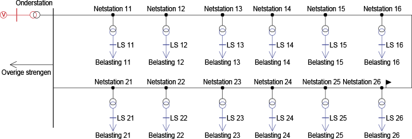In the MV distribution ring of figure 9.25, one of the disconnectors in the cable between nodes 'Netstation 16' and 'Netstation 26' is opened. This seems like a logical choice, considering the network losses. A load flow calculation provides insight into the network loss during maximum load. Moving the network opening will demonstrate that the network loss increases.
In reality, however, both branches are not equal in length and contain an unequal number of substations with unequal loads. The load profiles can also be unequal. To optimize the opening, one can choose to minimize the network losses over a period, during which the entire load cycle is completed. This was done for the example network in figure 9.25, where in figure 9.26 the load profile of the upper branch (Substation 11 through 16) is shown in hourly values as 'Load 11' and the load profile of the lower branch as 'Load 21'.
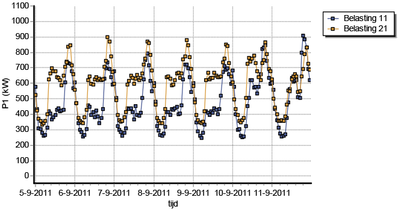With a load flow calculation, the power losses of all cables are calculated for each hour. If these losses apply for the entire hour, the calculated numbers are equal to the energy loss during that hour:
[ |
9.39 |
] |
By performing this calculation over a period of one week (168 hours), the total energy loss across all cables for the entire period is calculated as follows:
 |
[ |
9.40 |
] |
A load flow calculation for the specified load profiles can demonstrate whether the chosen location for the network opening is indeed optimal and results in the smallest losses, while also meeting the voltage requirements.
A distribution network typically has a single power supply. It is indeed possible to apply multiple power supplies in a load flow calculation, but caution is advised. If two or more subnetworks are modeled that are not connected to each other, each subnetwork can be connected to its own power supply. If these subnetworks are later interconnected, balancing currents will be calculated that usually do not match reality. This is caused by the fact that a power supply is defined with a fixed voltage, both in magnitude and angle. The magnitude of the voltage is usually fairly well known, but the angle is almost always unknown. When multiple power supplies are connected, currents will flow due to differences in these voltages. Therefore, to study the balancing currents in (whether short-term or not) connections, it is best to also model the higher-level feeding transmission network, so that only one power supply is needed. Figure 9.27 provides an example.

As a result of a through-transport in the HV transmission network, a voltage difference arises on the HV rails of both substations. The voltage regulation of the supply transformers limits the voltage difference on the MV sides of both supply transformers, but the phase angle difference is not regulated. This phase angle difference is also noticeable in both MV strings. If the switch at 'Netstation 26' needs to be briefly closed for maintenance, the voltage difference, including the phase angle, must be limited to prevent dangerous situations. If both MV strings were modeled with their own network supply, a voltage difference due to variations in the supplying network would not be visible, making it impossible to calculate the equalizing current. More extensive publications on this topic, particularly regarding the connection of subnetworks for maintenance purposes, can be found in (Provoost, 2005) and (Nuijten, 2006).
When using two parallel transformers, it is important to ensure that both have the same turns ratio to prevent unequal loading. The impedance of a transformer has a small R/X ratio, meaning the reactance is much greater than the resistance. This predominantly reactive nature of the transformer impedance results in an unequal turns ratio causing a difference in reactive power transfer. The active power transfer is only slightly affected by an unequal tap setting. Figure 9.28 shows a situation with two identical and equally set transformers.

Figure 9.29 shows the same two transformers, with the tap changer of transformer T2 adjusted by one step. As a result, the nominal voltage on the primary side is reduced from 132 to 129.75 kV. Consequently, the reactive power transfer through T2 increases by nearly 10%. By comparison, the active power through T2 increases by only about 1%.

If it is not the reactive power but the active power that needs to be influenced, the phase angle of the transformation ratio would need to be changed. These so-called phase-shifting transformers are only sporadically found in high-voltage transmission networks and are never used in distribution networks.
Phase to Phase is onderdeel van Technolution. © 2009-2021